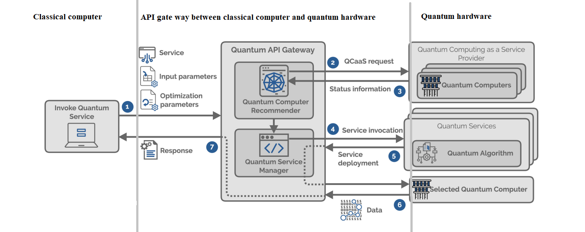

Professur Verteilte und Selbstorganisierende Rechnersysteme
Technische Universität Chemnitz
Chemnitz, Deutschland
1. Introduction
Edited by Amirali Shaban Khamseh
1.1. introduction to quantum computing
To gain a better understanding of quantum computers, let's examine their differences compared to classical
computers.Classical computers operate using bits, which can exist in either a state of one or zero. In
contrast, quantum computers make use of quantum bits, or Qubits for short. Qubits can exist in superposition
states, representing a linear combination of zero and one.These states are entangled with each other,
allowing them to influence each other's behavior regardless of the distance between them. [1]
When we attempt to determine the value of each state, the states collapse, providing us with a single value.
This process is known as measurement in quantum computing. To control the benefits of Qubits, we must
perform our computations during the pre-measurement phase. Additionally, it is possible to manipulate the
states in this phase by using quantum gates. Quantum gates can be thought of as logical gates that alter the
values of the states.[2]
By arranging these gates in a series, we can construct a quantum circuit. Depending on our specific problem,
we may require a certain number or set of input values. Once we apply the desired logic, we can obtain the
output(s) from the circuit we have created. A quantum computer is essential to provide the computational
power necessary for Qubits within this circuit.[2]
1.2. How Qubits can have a more powerful computation ?
After understanding what a Qubit is and the fundamental differences between qubits and bits, we can explore
These differences help us become better at computing.
Considering a system with N
qubits, it can simultaneously operate on all possible permutations of 2 to the power of N.
This is very different from classical computers, which can only use one state from the permutations. For
instance,
a system equipped with 250 qubits can handle more states than there are atoms in the entire universe.
[1]
Even though it seems like a huge number, we have already gone beyond it. Presently, Quantum computers can
use more than 430 qubits for calculations. [8]
When discussing the substantial computational power, concerns about potential threats to security protocols
arise. Can the current power pose a risk to our existing security protocols? Let's consider the widely used
RSA (Rivest–Shamir–Adleman) protocol as an example. Cracking RSA would require a minimum of one million
qubits. Thus, the answer to this question is no; we are not currently facing a threat. However, an
interesting prediction says that by 2048, We could potentially break this type of encryption in just 24
hours. [3]
Last year, approximately $30 billion was invested globally in the field of quantum technology. This
substantial investment highlights the immense size of this field and its potential for significant growth in
the coming years. [2]
Among all nations, China stands out with the highest contribution, accounting for half of the total
investment. Following China, European countries collectively hold the second position. Within Europe,
Germany has made the most significant contribution compared to other European nations. Additionally, the
European Commission has allocated one billion dollars to support a group of researchers known as the EU
Quantum Flagships. This funding aims to facilitate the commercialization of quantum services within Europe.[2]
2.2. Companies and start-ups in the area of Quantum Web services
Using the power of quantum computing through the classical computer interface is no longer just a wish; it
has become a reality, thanks to companies like Amazon, IBM, Google, and D-wave. These companies offer
quantum services through the cloud, employing a cost-per-usage model.
Therefore, the Quantum program can be deployed via this interface onto the Quantum hardware, and the cost
will be
determined based on the hardware's processing power. The results of running this program through the same
interface will then be provided to the user.
Figure 2: 2022 Global invesntment in Quantum [2].
Figure 3: 2022 Global invesntment in Quantum (diagram) [2].
3.Quantum Software Engineering
Edited by Amay Rajvaidya
3.1. Common grounds from three distinguished fields
Quantum Software Engineering combines software engineering with three different domains based on their paradigms. This combination could be seen as a mismatch that leverages the capabilities of different fields to evolve classical software engineering. Software engineering is an evolving field that deals with complex real-world problems and provides software-based solutions to these problems. On the other hand, we have areas such as
Mathematics: one of the oldest fields of research, which is developed over centuries to support the study of the universe and science. The basic principle of mathematics is algorithms and formulations developed over decades to solve complex problems.
Computation: a field based on facts and rules which are derived from mathematics and used to perform operations that require results from calculations using mathematical paradigms.
Quantum Physics: the study of the fundamental laws that govern nature and the universe is the basic principle of physics.
Quantum software engineering is a process for developing software for complex quantum algorithms that can be executed on quantum computers. This software can then be used to perform complex tasks which are not in the scope of classical computing capabilities.
But merging these different field has some cons as well.
Not a perfect match: To work with quantum software engineering, professionals need to have knowldege and skills
in all these fields. If a software developer doesn't have any experience with concepts of
quantum mechanics than it would be difficult to understand the processing of the hybrid quantum systems.
To develop a solution with quantum systems, developers should have the skillset to work with distinguished fields and
this could become ambiguous at certain points.
4. Researches in Quantum Web Services
Edited by Amay Rajvaidya
Quantum Web Services leverage the capabilities of quantum computers to be used as services over the internet. Quantum web services are based on the basic principles of classical web services, such as distributed systems, API architecture and commuincation.
At present, there are plenty of organisations which are researching on the implementation of architecture for Quantum web services.
Quantum network and service architecture can be visualized by combining various aspects of classical web services such as Software as a Service(SaaS), communication and networking. Quantum web services is being conducted in relation with various aspects of classical services.
4.1. Quantum Computing as a Service
The concept of Quantum computing as a Service is to provide quantum algorithms and quantum computing capabilities as a classical service so that anyone can access the quantum system from anywhere in the world without having their own physical quantum system. Quantum web services involve a network of quantum computers and communication channels that provide remote access to quantum algorithms and capabilities via the cloud.
Currently there are many cloud providers like Amazon Bracket, Dwave, etc which are providing access to their quantum system via internet. The research department in these cloud providers are working on more efficient ways to access and perform quantum services on classical systems. Code platforms are being developed to create interfaces for communicating with quantum services [10].
4.2. Quantum-based encryption
Unlike the classical web services architecture that relies on security protocols for information transmission over the network, quantum services utilize Quantum-based encryption to securely transmit qubits over
the quantum network. Quantum-based encryption relies on a technique of quantum cryptography known as Quantum Key Distribution. Currently, studies are being conducted in the field of post-quantum cryptography to
investigate the impact and security risks of real-world quantum network implementation and to develop security protocols for communication in a quantum network [11].
4.3. Quantum Hardware and Computing
There is much ongoing research focused on improving the scalability, coherence, and stability of quantum systems. This research is being used to develop quantum algorithms for various applications. Progress in this area is a very important aspect for the practical implementation of the architecture of quantum web services that provide enhanced computation capabilities.
4.3. Quantum communication and networking
Researchers are working on long distance transmission of information in the form of quantum bits over various communication channels. Since quantum bits require an optimal temperature to be maintained so that they hold their state and no loss of information occurs, the transmission of these qubits over network channels is very complex. Quantum networking aims to interconnect multiple quantum systems of different configurations so that they can process multiple quantum functions without having an interface for these functions stored in their systems.
4.4. Quantum software and programming
as the implementation of quantum services increases, a need for quantum programming languages and software development tools emerges. Basic types of quantum computing languages include the quantum instruction set and the quantum development kit.
Quantum instruction set: "These are used to turn complex algorithms into physical instructions that can be performed on quantum processors and vary depending on the qubit modality of the quantum architecture (superconducting/silicon-based/trapped ions etc) of the hardware platform" [5].
Quantum development kits: "Quantum software development kits (SDKs) offer various tools to design and exploit quantum programs, while also providing the user with the ability to simulate the quantum programs or prepare them to be run using cloud-based quantum devices. The Current SDKs with access to quantum processors and/or Quantum Development Kits available are Ocean, Qiskit, ProjectQ, Forest, Strawberry Fields, PennyLane, and Cirq" [5].
5. Challenges for quantum web services
Edited by Amay Rajvaidya
5.1. Quantum hardware
scalability and coherence: successful implementation of quantum web services depends mainly on the availability of scalable and reliable quantum systems. Currently, many quantum systems are still in the development phase, so there are still limitations in qubit coherence and scalability.
"Quantum coherence is a desired property for a qubit. The duration of the qubit coherence is used to make quality comparisons between qubits. Coherence tells us something about how long a qubit retains its information, and thus dictates some sort of lifetime"[6].
To ensure proper flow and processing of qubits from different configurations, quantum systems must be compatible and scalable with classical computing.
5.2. Lack of standards and protocols
classical web services have an REST API architecture that includes protocols such as HTTP, IP, TCP, and other well-known protocols to establish secure and reliable communication. However, in the case of quantum web services, there is no defined protocol for secure transmission of qubits. Currently, post-quantum cryptography (developments in Quantum Key Distribution) is in the process of being implemented as a protocol for quantum networks. However, it is currently a challenge to practically implement a channel for qubits between quantum systems [11].
5.3. Decoupling
another important aspect of the classical service architecture is decoupling, which allows developers to create stubs from various code generation tools for defining services in different programming languages. This makes the development more agile and flexible for developers. However, for quantum web services, there is a lack of specifications and tools that can generate a structure for API calls [12].
5.4. Complex architecture for web services
On one side we have software development, a fast growing field with new technologies and tools that improve the development process every day, and on the other side we have quantum service architecture that requires developers to define circuits and interfaces on their end just to access a specific quantum system and algorithm. In comparison, quantum service development is much more complex for developers. As the demand for quantum algorithms will increase in the future, SDKs and tools will evolve to simplify access to quantum capabilities[12].
6.Quantum usecases for web
Edited by Amirali Shaban Khamseh
6.1. Areas we may not need the Quantum power on web
So far, we have discussed how powerful quantum computing is. However, it's important to note that we
may not require this level of computational power for all the web services we use. For instance, sending and
receiving emails do not necessitate quantum power. The current architecture for this specific task is
well-established, and it generally doesn't demand significant computing power. Nevertheless, in the future,
quantum power may be used to enhance the security of communication channels. [9]
Additionally, storing data on a quantum computer is not a practical task. Their memory only lasts for a
couple of microseconds, whereas current database management systems are designed to efficiently handle data
storage. However, we can still use the power of quantum computing for data search in databases. By
utilizing quantum algorithms like Grover's algorithm, we can search for data in a quadratic time complexity,
providing a potential advantage compared to the current search algorithms.[9]
6.2. Areas we will need the Quantum Power
Having quantum computational power can be advantageous in various areas of the web, such as cryptography. As
mentioned earlier, the natural uncertainty of qubit values can be used as a benefit. This can allow us to
create unhackable private keys, a method commonly referred to as quantum-safe cryptography.
[9]
Furthermore, artificial intelligence and language models can benefit from this power. Language models
require the analysis of big data models and algorithms that run on top of these datasets to learn and gather
valuable information. However, this task can be highly resource-intensive and consume significant
computational power. Quantum power, on the other hand, enables us to analyze huge datasets all at once and
run complex algorithms in parallel.
[9]
Additionally, quantum power proves to be useful when dealing with optimization problems. These types of
problems are currently a challenge for classical computers due to their complex nature and continuous
variables in the optimization equations. However, with the help of quantum computing, we can handle a vast
set of inputs and reduce them to those with a higher probability of desired outcomes. After forming this
subgroup, we can then hand them over to classical computers to solve them traditionally. This hybrid
approach allows us to benefit from the strengths of each computing system and effectively solve these
problems.
[9]
7.Current capabilities of quantum computers
Edited by Amay Rajvaidya
7.1. Qubits
Recent developments in quantum systems have led IBM to develop the most powerful quantum system called Osprey with a processing capacity of 433 qubits. IBM is also working on merging quantum systems and developing a transmission channel between the systems to achieve a processing capacity of about 4000+ qubits[13].
7.2. Quantum simulations
Quantum computers are used to simulate various quantum systems on classical computers. Although these simulations are limited to small-case systems due to the current hardware constraints, they have performed promising use cases such as modelling chemical reactions and material properties, which is a very important aspect of drug discovery and material science. These simulations can also help in optimization techniques.
7.3. Quantum algorithms
The main purpose of quantum computers is to execute quantum algorithms more efficiently than classical computers for certain tasks. For example: the Shor’s algorithm, which can factorise large prime numbers, and it has a potential use case of cracking the RSA-based encryption algorithm used worldwide. While classical computers take years to crack RSA encryption, quantum systems can achieve that in a matter of hours. However, to achieve this performance, quantum computers would need to have a processing capacity of one million qubits. Another example of a quantum algorithm is the Grover’s algorithm, which has a quadratic speedup compared to classical systems when searching for unsorted datasets.
Quantum cryptography: quantum cryptography, also known as the unhackable cryptography system, has been supported by quantum systems for years to improve encryption. The Quantum key distribution (QKD) is based on quantum mechanics principles that enable secure communication channels.
"A security solution is as secure as its weakest link. In network encryption, the current weakest link with respect to the quantum computer threat is the secret key distribution based on public key cryptography. As its name says, QKD is used to distribute encryption keys, whose security is based on quantum physics and is thus guaranteed for the long-term[7]. "
In the future advances of quantum services, quantum key distribution is the most sought-after function of quantum systems.
8.Unfeasible Features of quantum web services
Editeb by Amay Rajvaidya
8.1. User controls and synchronization
One of the major drawbacks of quantum web services is user
control over the services requested by quantum systems. In classical web services, the user can control the
behavior of requests and responses, while quantum systems can only handle requests for single instances and
cannot handle multiple requests simultaneously. When you request a service defined with an interface (circuits
or gates logic), the server runs the algorithm with the gates included and returns the results. In the meantime,
you cannot queue another request for the service.
8.2. Decoupling
currently, there are no universally defined tools for generating stubs for quantum web
services. If a developer wants to use the features of quantum systems, he/she must write code for that quantum
system to define interfaces for querying the quantum server.
9.Architecture of Quantum Web services API and practical problems
Edited by Amirali Shaban Khamseh
9.1. Hybrid architecture(Quantum API gateway)

Figure 4: Hybrid architecture of quantum services , the picture may be small, please zoom in for reading the details [4].
The process of using this API involves seven steps. Initially, clients need to design the quantum circuit,
selecting the relevant quantum gates based on the specific set of inputs. Along with the circuit, an
optimization factor, which determines the best hardware for running the program, is sent to the API's
recommender.[4]
The recommender analyzes the circuit and optimization factor to suggest the most suitable quantum hardware.
It also checks the availability of the recommended hardware. Once the status of the quantum hardware is
determined, all the data is forwarded to the API service manager . [4]
Based on the inputs and the selected hardware, the API service manager requests the deployment requirements
from the specific quantum hardware. If all the requirements are met, the circuit is deployed on top of the
hardware. [4]
After the calculation process is completed, the result is sent back to the user who initiated the process by
calling the API.[4]
9.2. Traditional API versus API gateway
In the current systems we use, we deploy our system once on a server and make multiple calls to retrieve
data with the applied logic through the provided API interfaces. However, quantum computing operates
differently. In the world of quantum computing, we cannot deploy the system once and make multiple calls in
the same way. To deploy a program, we need to invoke a specific API provided by the Quantum hardware
provider through their dedicated interface. This API gateway is responsible for deploying the entire system
on the quantum hardware upon invocation and returning the execution results through the same interface to
the user.[4]
When considering resource-intensive applications that require frequent invocation, the cost can be
significant. Each API invocation for deployment consumes resources, and the accumulated usage is calculated
as the final cost for the user. Furthermore, when invoking the API, it checks the input preferences for
hardware and the availability of the requested hardware. If the desired hardware is not available, we may
need to use another hardware option that is not optimized for our specific task. Consequently, we may not
achieve the expected results due to hardware changes.[4]
Moreover, while traditional APIs operate based on established standards and protocols, the Quantum API
gateway protocols have not yet been widely established, leading to a lack of standardized protocols in the
quantum computing domain.[4]
10. Tools and Technologies
Edited by Amay Rajvaidya
10.1. The Amazon Bracket Stack
one of the most commonly used quantum providers is Amazon Bracket.
Bracket uses multiple quantum systems in its backend. With the Bracket Development Kit, users can access various
systems such as Rigetti (superconducting quantum system), D-Wave (quantum annealer), IONQ (trapped ion), and AWS
simulators.
10.2. Qiskit
Qiskit is a Quantum Development Kit (QDk) developed by IBM to allow developers to access
the load of multiple quantum providers. Qiskit provides support for local machine simulators, making it easier
to use as it uses Python code to access the systems.
11. Demo
During our demonstration, we utilized the Qiskit SDK to execute a complex algorithm called Fourier Checking. This algorithm verifies whether the provided Fourier functions are related to each other or not. By analyzing the mathematical relationship between the functions. We ran the algorithm on the local simulators provided by the Qiskit library, which allowed us to thoroughly test the functionality of the algorithm.
#importing the packages from the qiskit library
import qiskit.quantum_info as qi
from qiskit.circuit.library import FourierChecking
from qiskit.visualization import plot_histogram
#Defining two fourier functions to check if they are related
f = [-1,-1,-1,-1]
g = [1,1,1,1]
#adding fourier checking circuit and drawing it
circuit = FourierChecking(f=f,g=g)
circuit.draw()
Figure 5: Fourier Circuit visualized.
#calculating the probabilities to check the relation of the
#two fourier functions
z = qi.Statevector.from_label('00')
sv = z.evolve(circuit)
probability = sv.probabilities_dict()
plot_histogram(probability)
After the implementation of the circuit in the qiskit
simulator has been implemented, it checks the probability of the relationship. If the '00' probability is
more than or equal to 0.25, then the functions are related.
Figure 6: Probabilities for concluding relation between fourier functions.
As can be seen in Figure 6, the probability of the state "00" is 0.25, which means that the given
Fourier functions are related.
This code is refered from the Qiskit youtube channel for qunatum development